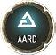
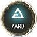

Combat Signs
 Geralt can cast five different magic signs: Yrden, Quen, Igni, Axii, and Aard (as listed from left to right on your quick access menu). Each has specific uses before and during combat. Casting a Sign requires a full bar of Stamina, so it’s important to know when to cast a Sign and why.
Geralt can cast five different magic signs: Yrden, Quen, Igni, Axii, and Aard (as listed from left to right on your quick access menu). Each has specific uses before and during combat. Casting a Sign requires a full bar of Stamina, so it’s important to know when to cast a Sign and why.
{kind=link}
{kind=link}
{kind=link}
{kind=link}
{kind=link}
All Signs can be upgraded in the Character Ability trees. These not only provide enhanced effectiveness, but even offer alternate Sign modes that change how they work in battle.
Yrden: A Magic Trap
Cast this Sign and a circle of Yrden symbols appears around Geralt. Most foes that wander into that ring are significantly slowed, though some monsters are unaffected by it. This circle is one of the best tools at your disposal to control multiple enemies in melee range. Yrden is invaluable against noonwraiths and nightwraiths, who remain incorporeal most of the time unless caught within an Yrden circle. Yrden’s ability to slow opponents increases with Sign Intensity.
Quen: Protective Shield
{kind=link}
This Sign can be the difference between life and death. Quen’s basic ability is to cover Geralt in a protective shield that absorbs a limited amount of damage. Usually, this means a single hit against most equal level foes, but that doesn’t mean Quen isn’t useful. If you’re using Light Armor, your Stamina regeneration can be so swift that you can cast Quen multiple times in a fight, keeping you safe from damage. Investing in Quen can make it capable of sustaining several hits before breaking. This scales with Sign Intensity.
Igni: Deals Fire Damage
{kind=link}
The fiery Igni Sign allows Geralt to spread a wave of embers at his foes. It can also be used for something more subtle, such as lighting a torch or campfire. Igni is incredibly effective against foes that are weak to fire. It can light enemies on fire and do damage over time. In some cases, this effect causes the enemy to panic. Additionally, any flammable gasses in the air, or barrels on the ground, can be ignited to cause powerful explosions that can hurt and stun your enemies. Enemies with shields are also exposed when doused with Igni fire, and airborne foes swooping in to attack you can be damaged and dropped out of the air with a well-timed Igni blast. Damage for Igni scales with Sign Intensity.
Axii: Influences Opponents’ Minds
{kind=link}
This Sign muddles the mind of an opponent, making it possible to take them out of the fight temporarily. It’s most effective against humans, but can also work on certain monsters. Target an enemy that looks to be especially troublesome, then cast Axii to keep them out of the fight until you’re ready to deal with them.
Axii can also be used in conversations with other characters in some cases, though some people are strong willed and can resist it. Avoid this by investing Ability Points in the Delusion ability.
This opens new options and possibly resolves a matter more peacefully, if not just making the ensuing fight easier with one threat temporarily removed.
Axii can even be used to calm Roach or tame wild horses for transportation. Axii’s ability to confuse enemies increases in power and duration with greater Sign Intensity.
Aard: Telekinetic Blast
{kind=link}
This Sign casts a directed wave of telekinetic energy that can stagger or knock down opponents, leaving them open for attack. Aard can also blow out any existing fires, blast open poorly secured doors, or punch through cracked or damaged walls.
{kind=link}
Do not underestimate how useful this skill can be. Some enemies that are knocked over can even be finished off with an immediate execution technique. Foes that are normally adept at blocking (such as those carrying shields or two-handed weapons) may be exposed as they are staggered. Flying enemies may also be blasted out of the sky and brought down within reach of your blades. Aard’s chances to knock enemies down increases with higher Sign intensity.
Alternate Sign Modes
Invest in the Signs Character Abilities tree to unlock alternate Sign modes that change how a Sign operates. To use these modes, you must first Activate the Ability by placing it in an Ability Slot (later in this chapter). Then, instead of just a brief press of the Sign button, hold it down to unleash the Alternate Sign. You can read about these alternate signmodes in our Character Abilities section.
{kind=link}
Temporary Effects (From You Or Your Foes)
Combat may often cause unpleasant temporary debuffs on Geralt: sword strikes and the claws of monsters can cause bleeding, or inject poisons. Fires in the environment or used by enemies can cause burning damage over time. Water Hags can throw projectiles that temporarily stun Geralt. Sometimes, the environment itself is filled with noxious or flammable gasses that choke Geralt, unless he burns them away with Igni or clears the air with Aard. Extreme temperatures in the world can still hurt a Witcher.
Armor and armor enhancements can help mitigate some of these temporary effects. Every piece of armor has individual defense ratings for elemental damage, poisoning, bleeding, burning, and damage from monsters. Some armor might have special effects that can further enhance Geralt’s resistances to dwebuffs. For things that stun or knock Geralt to the ground, Quen is your chief defense.
{kind=link}
Fistfights (For Fun And Profit)
As you travel the land, there are numerous opportunities to challenge opponents to fistfights. Some of these brawls are actually sanctioned; bet upon by those with the coin to do so, and represent an opportunity to make a lot of coin yourself. But sometimes, the fistfights come to Geralt: belligerent or drunken thugs who are looking for a scrap. Geralt foregoes the use of his swords and Signs to pound some sense into them. Fistfighting plays out very similarly to standard armed combat:
Combat with your fists involves the same timing and controls as you would have with a sword. If you’re choosing to go bare-knuckle out in the field (outside a bout you’re betting on), you can even use your Signs, bombs, crossbow, potions, or anything else you need to win.
{kind=link}
However, if it’s an official fistfighting match as part of a regional tournament, Geralt cannot use any magic or weapons. In these brawls, he climbs into the ring shirtless, relying entirely on his strength and agility to pound his foes. Fistfighting tournaments and the opponents you face are covered in the Fists of Fury quests.
Playing As Cirilla Fiona Elen Riannon
At select points in the Main Quest, the perspective switches from Geralt to Cirilla. His adopted daughter is central to the plot, and Geralt’s efforts to find and safeguard her are his ultimate goals. However, Ciri is no mere damsel. She’s a sword fighter, trained by Geralt and his fellow Witchers at Kaer Morhen. She has seen more than her fair share of struggles in her lifetime and has fought through them all. You gain control of Ciri to experience certain events and battles from her perspective.
{kind=link}
Ciri is a different combatant from Geralt. She’s lighter on her feet. Her aggressive (almost reckless) fighting style relies on a single sword as opposed to the Witcher’s two. She cannot brew potions the way Geralt can, nor can she improve her stats by leveling or with mutagens and decoctions. Despite this, she’s a capable Witcher in her own right, and possesses unique abilities that become more apparent during the course of the story.
Ciri’s Swordfighting And Countering
{kind=link}
Ciri is an accomplished swordswoman, despite her impetuousness. She can use Fast and Strong Attacks as Geralt would. Her combinations come out faster than Geralt’s. However, unlike Geralt, she carries only one sword—but what a blade it is!
Like Geralt, Ciri can parry, turning aside some blows with her sword, and even counterattack if she times her defense just right.
Ciri’s Teleportation And Magic
 Charge
Charge

In due time, Ciri gains immense power that she uses to enhance her combat ability. Once she gains those powers, you can execute a short range charged sword strike. Ciri focuses power into her sword, then dashes at the closest target and delivers a devastating blow.
 Blink
Blink
{kind=link}
Ciri’s ability to teleport acts as her dodge technique, dashing forward in a blur of light. Later into the adventure, she can charge up her strong attacks, and then teleport straight at the closest foe, cutting them down before they even have a chance to consider a defense! This attack has short range, but little can stand up to it.
As her ability grows, she can create a magical field that expands over a vast swath of the battlefield. This allows Ciri to teleport to each enemy caught in the field to deliver brutal slashes from her sword. These immediately slay any standard opponent.
 Magic Amulet
Magic Amulet
{kind=link}
Should you wish to immolate a foe (or close group of enemies) with a column of fire from the heavens, utilize the Magic Amulet attack; ensuring you remove yourself from the area of effect after casting this powerful spell, which heavily damages foes. This is great for finishing foes you’ve staggered, or those just completing a sprint towards you, as there’s about a second delay before the maelstrom of fire arrives. You receive this amulet later in the adventure.
The Witcher® is a trademark of CD PROJEKT S. A. The Witcher game © CD PROJEKT S. A. All rights reserved. The Witcher game is based on a novel by Andrzej Sapkowski. All other copyrights and trademarks are the property of their respective owners. Learn more at thewitcher.com.